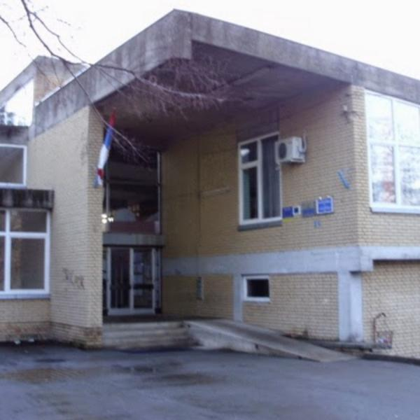
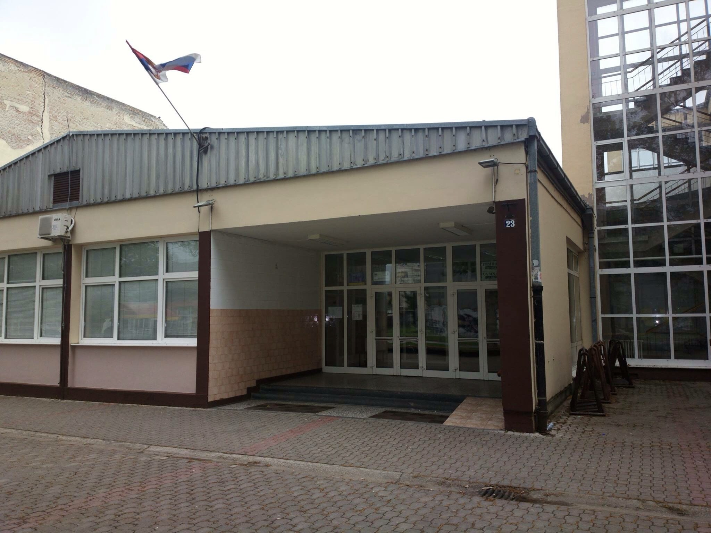
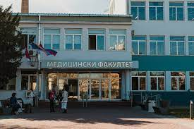
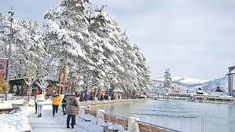
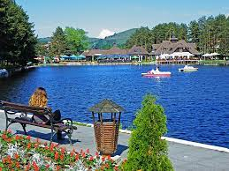
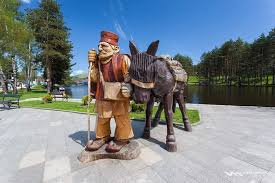
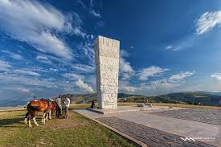

Име и презиме: Душан Араповић
Одељењее:III2
Адреса:ЈНА 88,Бач
Телефон:060-6771-106
основно:ОШ "Вук Караџић" Бач
средње:гимназија "20. октобар" Бачка Паланка
будуће:Медицински факултет Нови Сад
  прошло,садашње и будуће

Златибор је планина и парк природе у Србији која се простире на површини од око 1.000 km², дугачка је 55 km, а широка и до 20 km. Пружа се правцем сјеверозапад–југоисток. Највиши врх је Торник (1.496 m). Златибор се простире између 43° 31' N и 43° 51' N, и између 19° 28' E и 19° 56' E. Познато је љетовалиште и зимовалиште, као и климатско љечилиште. Златибор се налази на сјевером дијелу области Стари Влах, граничне области између Рашке, Херцеговине и Полимља. Обухвата предјеле три општине Републике Србије: Чајетину и један део општине Ужице (Креманска област) северни Златибор и један мањи део општине Нове Вароши (Муртеничка област) јужни Златибор. Административни центар Златибора је варошица Чајетина.Златибор се налази на пола пута од Београда до Црногорског и Дубровачког приморја. Преко њега прелазе многи значајни магистрални путеви и пруге, међу којима је и пруга Београд—Бар. Најближи већи град је Ужице.

Постоји више претпоставки којима се објашњава порекло имена Златибор. У средњем вијеку, овај крај се налазио у оквиру жупе Рујно, административне области Рашке, па је и цијели Златибор носио такво име. Оно потиче од кржљаве биљке руја која се користила за бојење (штављење) коже и извозила се у Дубровник, а данас расте по селима Семегњеву, Стублу и Увцу. Од 18. вијека, све више се користи назив Златибор, а и 1855. године је, приликом нове административне подјеле Србије, Рујански срез подијељен на Ариљски и Златиборски, па име Златибор доспијева и у званична документа. Прве писане трагове о називу Златибор имамо у извештајима које су у току Првог српског устанка одавде слали устаници. Такође је извесно да га писци тих извештаја нису измислили већ је он неко време и пре тога био у оптицају, али не зна се колико дуго. Слободна је претпоставка да је то од друге половине 8. века.Треба правити разлику између имена планине и назива некадашње административно-територијалне јединице Срез златиборски чије се територије нису морале у потпуности подударати. Садашњи Златиборски округ обухвата знатно ширу област од територије планине Златибор. Малу забуну уноси и туристичко место Златибор које има исти назив као и планина.

Планинска љепотица у југозападном дијелу Србије била је одредиште доконих и богатих још од средине 17. вијека, мјесто привременог боравка оних који су, прије свега, трагали за здрављем, али и за благодјетним миром златиборских падина на којима се очи одмарају, а тијело пуни енергијом. Ипак, прави туризам се развио тек када је на Златибор дошла једна крунисана глава, краљ Србије Александар Обреновић, 1893. године.У почетку је најинтересантнија била Краљева Вода, мјесто на ком је Његово Краљевско Величанство ручало, али су се убрзо прочули и други златиборски висови: Палисад, Рибница, Око. А онда је, 1905. године, на Златибор, по здравље, дошао још један краљ Србије, Петар I Карађорђевић. Након његовог боравка саграђени су и први велики објекти: хотел „Краљева вода“ – данашњи конгресни центар „Србија“ – вила „Чигота“ и пекара.